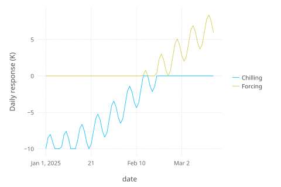
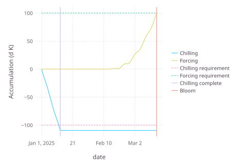

Chilling and Forcing
When does a warm day count toward bloom? In this model it only counts after a cold requirement has been met. This optional tutorial builds a two-stage model from daily mean temperatures and finds when each stage finishes. It can be run in a fresh session.
The example below adapts the simplified daily-mean model from the Cropbox Taiwan workshop. It is not the full minimum/maximum-temperature formulation also shown there.
First clamp temperature at zero degrees Celsius, then subtract a threshold $T_c$. The negative part supplies chilling and the positive part supplies forcing:
\[\begin{aligned} T_a &= \max(T, 0^{\circ}\mathrm{C}), & \Delta T &= T_a - T_c, \\ c &= \min(\Delta T, 0\,\mathrm{K}), & f &= \max(\Delta T, 0\,\mathrm{K}). \end{aligned}\]
Chilling accumulates until $C \leq R_c$. Only then does forcing accumulate, with bloom reached when $F \geq R_f$. Chilling is negative in this model: $C$ decreases toward a negative requirement, while $F$ increases toward a positive requirement. Both accumulated quantities have units of kelvin-days, not chilling hours.
Connect the daily weather
Use the same weather component as in Weather-driven Phenology. The complete setup is shown here; install Cropbox and DataFrames if needed. Dates comes with Julia.
using Cropbox
using DataFrames
using Dates
@system Weather begin
calendar(context) ~ ::Calendar
date(calendar.date) ~ track::date
data ~ provide(parameter, index = :date, init = date)
T: temperature ~ drive(from = data, by = :Tavg, u"°C")
endMain.WeatherDeclare the two stages
@system ChillForce begin
Tc: temperature_threshold => 10 ~ preserve(parameter, u"°C")
Rc: chilling_requirement => -100 ~ preserve(parameter, u"K*d")
Rf: forcing_requirement => 100 ~ preserve(parameter, u"K*d")
Ta(T) ~ track(min = 0, u"°C")
ΔT(Ta, Tc) => Ta - Tc ~ track(u"K")
c(ΔT): chilling ~ track(max = 0, u"K")
C(c): chilling_accumulated ~ accumulate(when = !d, u"K*d")
d(C, Rc): chilling_done => C <= Rc ~ flag
f(ΔT): forcing ~ track(min = 0, u"K")
F(f): forcing_accumulated ~ accumulate(when = d, u"K*d")
bloom(F, Rf) => F >= Rf ~ flag
stop(bloom, last = calendar.stop) => bloom || last ~ flag
end
@system ChillForceModel(ChillForce, Weather, Controller)Main.ChillForceModelwhen controls the rate supplied to each accumulator. Once d becomes true, C keeps its accumulated value and F starts accumulating. The flag does not need once here: chilling cannot increase, so the threshold remains satisfied. The stop flag also checks the end of the available weather; reaching that date does not imply that bloom occurred.
Configure a winter-to-spring scenario
This synthetic 90-day series combines seasonal warming with weekly variation. The temperatures and parameter values illustrate the two stages; they are not observations or calibrated predictions for a particular species or site.
t = 0:89
winter = DataFrame(
date = Date(2025, 1, 1) .+ Day.(t),
Tavg = 9 .- 9cos.(π .* t ./ last(t)) .+ 2sin.(2π .* t ./ 7),
);
cf_config = @config (
Clock => :step => 1u"d",
Calendar => (;
init = ZonedDateTime(DateTime(first(winter.date)), tz"UTC"),
last = ZonedDateTime(DateTime(last(winter.date)), tz"UTC"),
),
Weather => :data => winter,
)Simulate once with the daily clock and use the returned table for all three plots. Both accumulators start at zero on the calendar's initial date:
cf = simulate(ChillForceModel;
config = cf_config,
stop = :stop,
index = :date,
target = [:T, :Ta, :Tc, :c, :f, :C, :F, :Rc, :Rf, :d, :bloom],
)Read the responses and accumulated amounts
The clamped temperature Ta cannot fall below zero. The dashed line marks the threshold separating the chilling and forcing responses.
visualize(cf, :date, [:T, :Ta, :Tc];
kind = :line,
linestyle = [:solid, :dot, :dash],
names = ["Temperature", "Clamped temperature", "Threshold"],
ylab = "Temperature",
)
The daily responses have units of kelvin. A positive forcing response alone is not enough to increase F: the chilling requirement must also have been met.
visualize(cf, :date, [:c, :f];
kind = :line,
names = ["Chilling", "Forcing"],
ylab = "Daily response",
)
Plot both accumulated amounts and their requirements on one axis because they share the same units. In the graphical plot the states are solid and the requirements are dashed. Vertical lines mark the first date each stage is reached; an unfinished stage has no marker. In a text terminal the lines are all solid; use the series names and the table below.
p = visualize(cf, :date, [:C, :F, :Rc, :Rf];
kind = :line,
linestyle = [:solid, :solid, :dash, :dash],
names = ["Chilling", "Forcing", "Chilling requirement", "Forcing requirement"],
ylab = "Accumulation",
)
chill_day, bloom_day = findfirst(cf.d), findfirst(cf.bloom)
for (i, name) in ((chill_day, "Chilling complete"), (bloom_day, "Bloom"))
isnothing(i) || visualize!(p, [cf.date[i]]; kind = :vline, name)
end
The daily step can carry an accumulated amount beyond its requirement. Inspect the first row with completed chilling and the final row, including the bloom flag, rather than treating a threshold as an exact final value:
rows = isnothing(chill_day) ? [nrow(cf)] : unique([chill_day, nrow(cf)])
cf[rows, [:date, :C, :F, :d, :bloom]]| Row | date | C | F | d | bloom |
|---|---|---|---|---|---|
| Date | Quantity… | Quantity… | Bool | Bool | |
| 1 | 2025-01-13 | -109.524 d K | 0.0 d K | true | false |
| 2 | 2025-03-16 | -109.524 d K | 100.078 d K | true | true |
For this synthetic winter, chilling finishes on January 13 and bloom occurs on March 16. These are model results, not observed dates.
If a different configuration never meets the chilling requirement, d stays false and F stays zero. If either stage is unfinished at the last weather date, the final bloom flag is false; that date must not be used as a predicted bloom date. In that case the last row still tells you which stage was reached.
Use your own winter series
Replace winter with daily date and Tavg columns and set both calendar endpoints from that table. The CSV example shows how to read dated weather. The start determines which cold period counts; use the same start convention across calibration and validation years. Tc, Rc, and Rf are the threshold and requirement parameters. For fitting with observed bloom dates, see Evaluate and Calibrate Models.